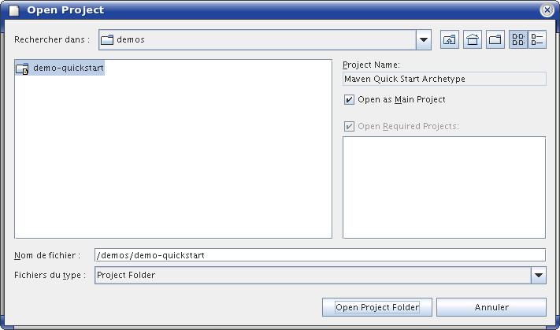
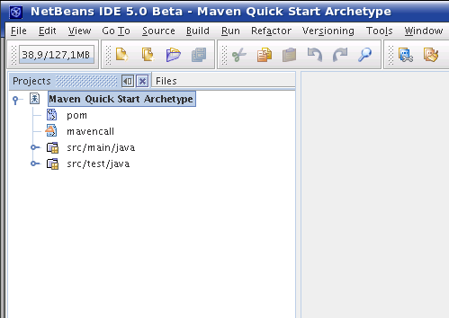
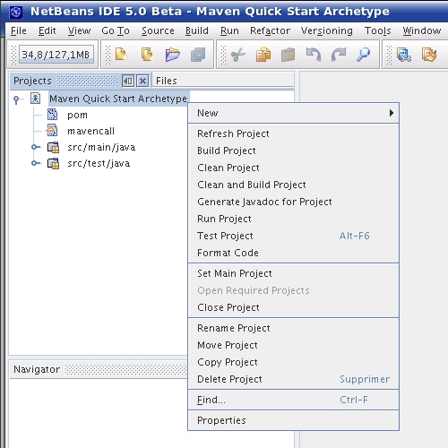
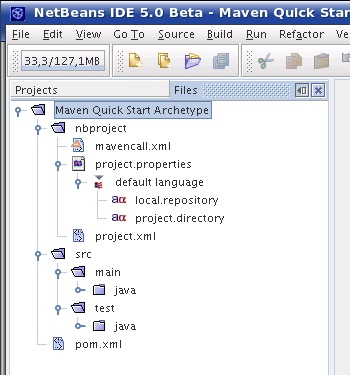
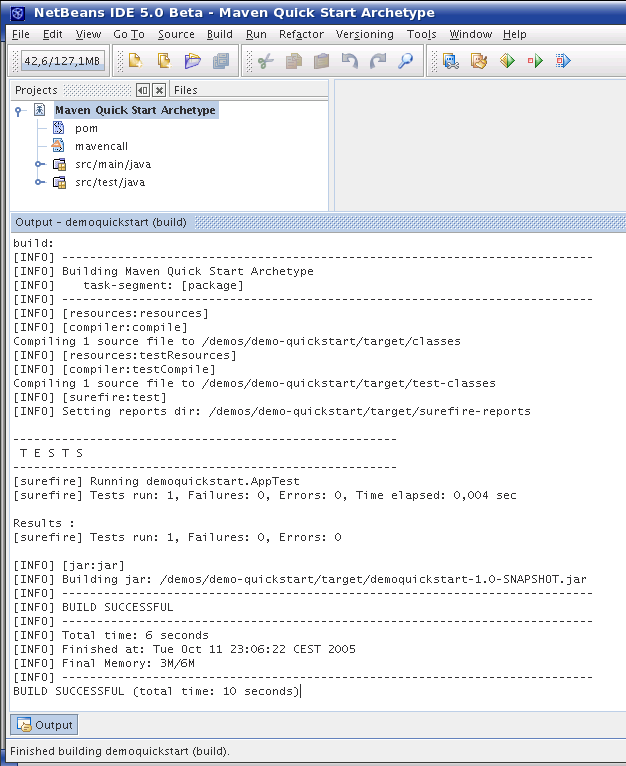
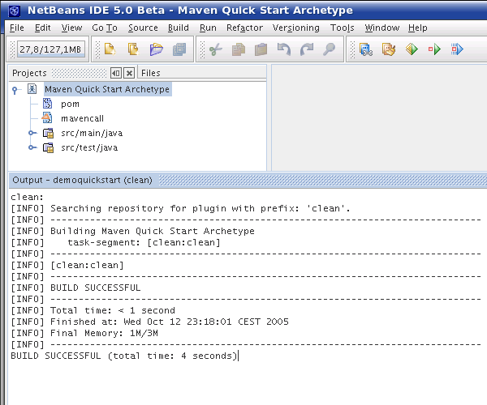
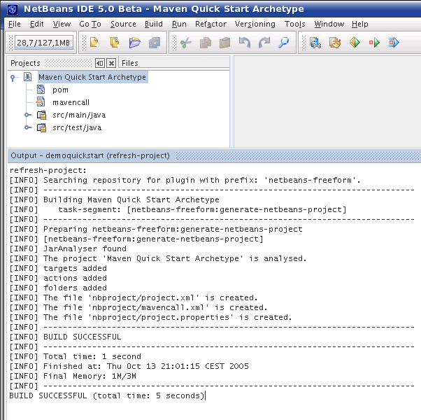
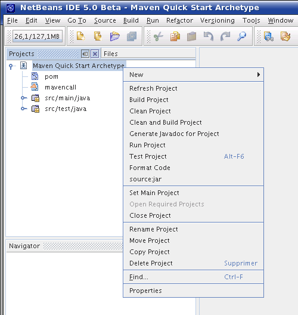
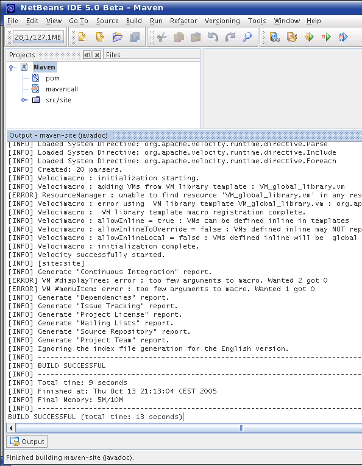

Using Maven 2 in NetBeans 4.0 (4.1 and 5.0)
This mini guide explain by examples how to use Maven 2 in NetBeans IDE.
To use Maven 2 in NetBeans you have to follow these steps:
- Retrieve/Create the Maven 2 project.
- Launch Maven 2 in command line using the netbeans-freeform plugin.
- Open the project with NetBeans.
- Build the project and launch other Maven goals.
- Edit properties of the plugin.
- Refresh the project view.
- Build the Maven 2 site.
This guide assume the project is created using the archetype plugin. You can also checkout the Maven 2 project using your versionning system.
[maven-user@mini-guide examples]$ mvn archetype:generate -DarchetypeArtifactId=maven-archetype-quickstart -DartifactId=demoquickstart -DgroupId=demoquickstart [INFO] Searching repository for plugin with prefix: 'archetype'. [INFO] ---------------------------------------------------------------------------- [INFO] Building Maven Default Project [INFO] task-segment: [archetype:generate] (aggregator-style) [INFO] ---------------------------------------------------------------------------- [INFO] Setting property: classpath.resource.loader.class => 'org.codehaus.plexus.velocity.ContextClassLoaderResourceLoader'. [INFO] Setting property: resource.loader => 'classpath'. [INFO] ************************************************************** [INFO] Starting Jakarta Velocity v1.4 [INFO] RuntimeInstance initializing. [INFO] Default Properties File: org/apache/velocity/runtime/defaults/velocity.properties [INFO] Default ResourceManager initializing. (class org.apache.velocity.runtime.resource.ResourceManagerImpl) [INFO] Resource Loader Instantiated: org.codehaus.plexus.velocity.ContextClassLoaderResourceLoader [INFO] ClasspathResourceLoader : initialization starting. [INFO] ClasspathResourceLoader : initialization complete. [INFO] ResourceCache : initialized. (class org.apache.velocity.runtime.resource.ResourceCacheImpl) [INFO] Default ResourceManager initialization complete. [INFO] Loaded System Directive: org.apache.velocity.runtime.directive.Literal [INFO] Loaded System Directive: org.apache.velocity.runtime.directive.Macro [INFO] Loaded System Directive: org.apache.velocity.runtime.directive.Parse [INFO] Loaded System Directive: org.apache.velocity.runtime.directive.Include [INFO] Loaded System Directive: org.apache.velocity.runtime.directive.Foreach [INFO] Created: 20 parsers. [INFO] Velocimacro : initialization starting. [INFO] Velocimacro : adding VMs from VM library template : VM_global_library.vm [ERROR] ResourceManager : unable to find resource 'VM_global_library.vm' in any resource loader. [INFO] Velocimacro : error using VM library template VM_global_library.vm : org.apache.velocity.exception.ResourceNotFoundException: Unable to find resource 'VM_global_library.vm' [INFO] Velocimacro : VM library template macro registration complete. [INFO] Velocimacro : allowInline = true : VMs can be defined inline in templates [INFO] Velocimacro : allowInlineToOverride = false : VMs defined inline may NOT replace previous VM definitions [INFO] Velocimacro : allowInlineLocal = false : VMs defined inline will be global in scope if allowed. [INFO] Velocimacro : messages on : VM system will output logging messages [INFO] Velocimacro : autoload off : VM system will not automatically reload global library macros [INFO] Velocimacro : initialization complete. [INFO] Velocity successfully started. [INFO] [archetype:generate] [INFO] Defaulting package to group ID: demoquickstart [INFO] artifact org.apache.maven.archetypes:maven-archetype-quickstart: checking for updates from central [INFO] ---------------------------------------------------------------------------- [INFO] Using following parameters for creating Archetype: maven-archetype-quickstart:RELEASE [INFO] ---------------------------------------------------------------------------- [INFO] Parameter: groupId, Value: demoquickstart [INFO] Parameter: outputDirectory, Value: /demos/demoquickstart [INFO] Parameter: packageName, Value: demoquickstart [INFO] Parameter: package, Value: demoquickstart [INFO] Parameter: version, Value: 1.0-SNAPSHOT [INFO] Parameter: artifactId, Value: demoquickstart [INFO] ResourceManager : found archetype-resources/pom.xml with loader org.codehaus.plexus.velocity.ContextClassLoaderResourceLoader [INFO] ResourceManager : found archetype-resources/src/main/java/App.java with loader org.codehaus.plexus.velocity.ContextClassLoaderResourceLoader [INFO] ResourceManager : found archetype-resources/src/test/java/AppTest.java with loader org.codehaus.plexus.velocity.ContextClassLoaderResourceLoader [INFO] Archetype created in dir: /demos/demoquickstart [INFO] ---------------------------------------------------------------------------- [INFO] BUILD SUCCESSFUL [INFO] ---------------------------------------------------------------------------- [INFO] Total time: 2 seconds [INFO] Finished at: Tue Oct 11 21:59:22 CEST 2005 [INFO] Final Memory: 3M/7M [INFO] ----------------------------------------------------------------------------
After having retrieved the Maven 2 project, you have to enable the project to be seen as a NetBeans 4.0, 4.1 or 5.0 project using the NetBeans Freeform project type.
To enable the project, use the netbeans-freeform plugin for Maven 2.
[maven-user@mini-guide demoquickstart]$ mvn netbeans-freeform:generate-netbeans-project [INFO] Searching repository for plugin with prefix: 'netbeans-freeform'. [INFO] ---------------------------------------------------------------------------- [INFO] Building Maven Quick Start Archetype [INFO] task-segment: [netbeans-freeform:generate-netbeans-project] [INFO] ---------------------------------------------------------------------------- [INFO] Preparing netbeans-freeform:generate-netbeans-project [INFO] [netbeans-freeform:generate-netbeans-project] [INFO] JarAnalyser found [INFO] The project 'Maven Quick Start Archetype' is analysed. [INFO] The file 'nbproject/project.xml' is created. [INFO] The file 'nbproject/mavencall.xml' is created. [INFO] The file 'nbproject/project.properties' is created. [INFO] ---------------------------------------------------------------------------- [INFO] BUILD SUCCESSFUL [INFO] ---------------------------------------------------------------------------- [INFO] Total time: < 1 second [INFO] Finished at: Tue Oct 11 22:12:30 CEST 2005 [INFO] Final Memory: 1M/3M [INFO] ----------------------------------------------------------------------------
The netbeans-freeform plugin creates one directory and three files by reading the Maven 2 project descriptor:
- The nbproject directory holds the NetBeans project descriptor.
- The <project.xml file is the NetBeans Freeform project descriptor.
- The mavencall.xml holds the Ant calls which execute Maven 2, as NetBeans uses Ant as its build tool.
- The project.properties files holds the two properties: local.repository which is the absolute path to the Maven 2 local repository and project.directory which is the absolute path to the project directory.
Now that the Maven 2 project is eneabled for use in NetBeans, open your NetBeans IDE. Then open the project (Ctrl+Maj+O).
Here is the Open Project window.
And here are:
The Projects Window with the opened project.
The project's Context Menu of the opened project.
And the Files Window with the opened project.
It is now time to try the first execution of Maven 2 from within NetBeans. Try the Build Main Project NetBeans action (F11). You see the Maven 2 execution of the package lifecycle goal.
You can also call the Clean Project NetBeans action which is mapped to the clean Maven2 goal.
Now you can add some additionnal views in your Projects window in NetBeans. Like an additionnal goal in the context menu.
<project xmlns="http://maven.apache.org/POM/4.0.0"
xmlns:xsi="http://www.w3.org/2001/XMLSchema-instance"
xsi:schemaLocation="http://maven.apache.org/POM/4.0.0
http://maven.apache.org/xsd/maven-4.0.0.xsd">
<modelVersion>4.0.0</modelVersion>
<groupId>demoquickstart</groupId>
<artifactId>demoquickstart</artifactId>
<packaging>jar</packaging>
<version>1.0-SNAPSHOT</version>
<name>Maven Quick Start Archetype</name>
<url>http://maven.apache.org</url>
<dependencies>
<dependency>
<groupId>junit</groupId>
<artifactId>junit</artifactId>
<version>3.8.1</version>
<scope>test</scope>
</dependency>
</dependencies>
<build>
<plugins>
<plugin>
<groupId>org.codehaus.mojo</groupId>
<artifactId>netbeans-freeform-maven-plugin</artifactId>
<version>2.0</version>
<configuration>
<additionalGoals>source:jar</additionalGoals>
</configuration>
</plugin>
</plugins>
</build>
</project>
You can also configure some additionnal files and folders in the Projects window.
The last option is to create the nbproject folder and its content in another directory than in the Maven 2 project's one.
The full configuration can be found at http://mojo.codehaus.org/netbeans-freeform-maven-plugin/.
To refresh the Project view in NetBeans accordingly to the new configuration added to the Maven 2 project descriptor. Just right-clic the project in the Projects window and choose the Refresh Project action.
Here is the resulting refreshed Context Menu.
You can call The Generate Javadoc for Project NetBeans action which is mapped to the site Maven 2 goal, here in the Maven site archetype.
